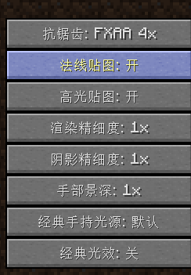
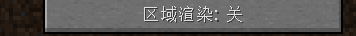
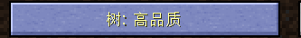

秦
序言
关于秦材质包
英文名：KABUTO Texture
作者：金丹（一名高考毕业生，暂时有空余时间更新）
B站ID：金丹哦
秦材质包，一名高二狗独自一人所制作的（现在是大学生啦），目前有 Java 和手机 Bedrock 双版本。
MCBBS发布帖：我的世界中文论坛
赞助渠道：爱发电
光影及配置推荐
推荐使用光影：SEUS PTGI HRR Test 2.1 GFME 或 iterationT 2.0.1 / 3.0.0
iterationT在1.16.5以下的需要在光影设置内启用 G7前兼容性 选项
获取方式：·SEUS PTGI HRR Test 2.1 GFME 链接：mcbbs
iterationT 2.0.1 链接：B站发布专栏
光影也可在上方频道获取！
光影设置内视差打开
为了能让各级别电脑稳定运行秦材质包，给玩家良好的游戏体验，作者对秦材质包处理出数种版本（仅供参考）
运行内存的多少决定是否正常运行材质包，游戏流畅度主要看显卡好不好
cpu：不开光影材质流畅运行mc
显卡：流畅运行你喜欢的光影
秦Texture 32x（基本都能带）
秦Texture 64x（推荐电脑运行内存2g以上，基本都能带）
秦Texture 128x（推荐电脑运行内存4g以上，基本都能带）
秦Texture 256x（推荐电脑运行内存6GB以上，mc启动器设置分配至少3GB的运行内存）
秦Texture 512x（推荐电脑运行内存14g以上，mc启动器设置分配至少8GB的运行内存）
秦Texture 1024x（推荐电脑运行内存16GB以上，mc启动器设置分配至少12GB的运行内存）
第一章 如何安装秦材质包
可参考以下视频：
Bilibili - 【干货！萌新必看】萌新入坑mc材质包一定会碰到的问题
注意：1.17.x和1.18.x可能会出现游戏资源包列表读取不到秦256x和1024x的情况，原因未知，mojang出来挨打！解压成文件夹形式可以读取
第二章 使用秦材质包前需要做的工作
（第二章内容非常重要！里面的问题老玩家也会犯）
装载光影
选项→视频设置→光影→按照图片设置
 渲染精度和阴影精度你也可以拉到1x以上，总之不能低于1x
选项→视频设置→性能→区域渲染→关
 选项→视频设置→细节设置→树→高品质
 选项→视频设置→细节设置→替选方块→关
关掉替选方块的目的是解决因开启替选方块而造成的小部分方块贴图旋转和视差拉扯问题（如图：因打开替选方块造成小部分方块视差异常）
但打开替选方块可以启用模型贴图的随机效果（如图：打开替选方块启用草的随机模型） 替选方块-关：草模型固定统一
替选方块-开：草模型随机高矮
6. 选项→视频设置→品质→Mipmap→最大化
7. 选项→视频设置→品质→更好的草地→关
8. 选项→视频设置→光影→光影设置...→找到调节材质包分辨率的选项→把分辨率从16调到和加载的秦材质包一样的分辨率（相对应）
Ps： 每个光影的选项位置不同 ，有的光影设置还是英文的，“材质包分辨率”英文一般是：
Texture Resolution
例如：加载的秦材质包是512x的
中文光影：16x→512x
9. 视频设置→光影设置→找到“PBR”字眼（不同光影所在位置不同）—→从 oldpbr,seus或ptgi 调至 labpbr或labpbr1.2+
完成 _！开始使用秦材质包吧！_
第三章、常见问题
显示不兼容
先确认秦材质包适配的游戏版本 。本材质包匹配 1.7.10 - 1.12.2 的游戏版本。
退到主菜单
通过主界面左下角的数据确认当前游戏版本
1.14.4？！不在1.7.10 -1.12.2 的适配版本范围内！根本就不匹配，所以不兼容啊！
解决方法1：回到秦材质包获取渠道下载与游戏版本对应的秦材质包。
解决方法2：回到我的世界启动器，把游戏版本换成1.12.2或1.12.2以下1.7.10以上运行。
特殊情况
材质包是否兼容游戏版本，取决于材质包文件里的“pack”文件内容里的_“_pack_format”后缀的数字。
1.8--1.8.9是数字“2”做后缀
1.9--1.12.2是数字“3“做后缀
1.13--1.14.4是数字”4“做后缀
* 秦材质包1.7.10--1.12.2版本使用”3“做后缀。
如果把1.7.10--1.12.2的秦材质包用在1.8--1.8.9的游戏版本，会显示不兼容，但不要管它，照样运行！
如果把1.13--1.17.x的秦材质包用在1.16--1.17.x的游戏版本，也会显示不兼容，但不要管它，照样运行！
看不懂？简单来说就是：只要你选择的秦材质包是与游戏版本匹配的，它这个哈皮显示不兼容也照样运行！
解决视频
【注意】以下内容都在下列视频说清楚了